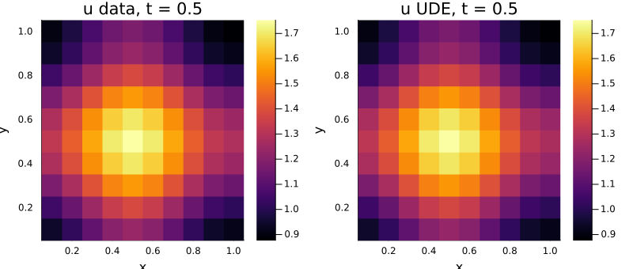

Learning the Brusselator reaction in two dimensions
The one-dimensional tutorial replaced the reaction of the Brusselator with a network of two inputs and two outputs. Here the same network sits in the two-dimensional Brusselator of the getting-started example, on a grid in x and y. Nothing in the setup depends on the dimension: the interior of each equation is still one array equation, and the network is evaluated in one call over the grid. What changes is the data, which now has three axes, and the cost of gradients through the solver.
Data from the two-dimensional Brusselator
The two-dimensional Brusselator with periodic boundaries, without the forcing term of the getting-started example and with a smaller diffusion coefficient:
\[\begin{align} \frac{\partial u}{\partial t} &= 1 + u^2 v - 4.4u + \alpha \left(\frac{\partial^2 u}{\partial x^2} + \frac{\partial^2 u}{\partial y^2}\right) \\ \frac{\partial v}{\partial t} &= 3.4u - u^2 v + \alpha \left(\frac{\partial^2 v}{\partial x^2} + \frac{\partial^2 v}{\partial y^2}\right) \end{align}\]
Again the reaction u^2 v is taken as unknown and the simulated data is kept. The first point along x and along y duplicates the last one under the periodic conditions and is dropped from the data, as in the getting-started example.
using ModelingToolkit, MethodOfLines, OrdinaryDiffEq, DomainSets
@parameters t x y
@variables u(..) v(..)
Dt = Differential(t)
Dxx = Differential(x)^2
Dyy = Differential(y)^2
α = 0.1
dx = 0.1
saveat = 0.02
tol = (abstol = 1.0e-8, reltol = 1.0e-8)
domains = [t ∈ Interval(0.0, 5.0), x ∈ Interval(0.0, 1.0), y ∈ Interval(0.0, 1.0)]
bcs = [
u(0, x, y) ~ 22 * (y * (1 - y))^(3 / 2), v(0, x, y) ~ 27 * (x * (1 - x))^(3 / 2),
u(t, 0, y) ~ u(t, 1, y), u(t, x, 0) ~ u(t, x, 1),
v(t, 0, y) ~ v(t, 1, y), v(t, x, 0) ~ v(t, x, 1),
]
disc = MOLFiniteDifference([x => dx, y => dx], t)
@named bruss = PDESystem(
[
Dt(u(t, x, y)) ~ 1 + u(t, x, y)^2 * v(t, x, y) - 4.4 * u(t, x, y) +
α * (Dxx(u(t, x, y)) + Dyy(u(t, x, y))),
Dt(v(t, x, y)) ~ 3.4 * u(t, x, y) - u(t, x, y)^2 * v(t, x, y) +
α * (Dxx(v(t, x, y)) + Dyy(v(t, x, y))),
],
bcs, domains, [t, x, y], [u(t, x, y), v(t, x, y)])
sol_true = solve(discretize(bruss, disc); saveat, tol...)
data_u = sol_true[u(t, x, y)][:, 2:end, 2:end]
data_v = sol_true[v(t, x, y)][:, 2:end, 2:end]
size(data_u)(251, 10, 10)The UDE
The network and the system are those of the one-dimensional tutorial with y added:
using ModelingToolkitNeuralNets
NN, θ = SymbolicNeuralNetwork(; n_input = 2, n_output = 2,
chain = multi_layer_feed_forward(2, 2; width = 6), nn_p_name = :θ)
reaction = NN([u(t, x, y), v(t, x, y)], θ)
@named ude = PDESystem(
[
Dt(u(t, x, y)) ~ 1 - 4.4 * u(t, x, y) + α * (Dxx(u(t, x, y)) + Dyy(u(t, x, y))) +
reaction[1],
Dt(v(t, x, y)) ~ 3.4 * u(t, x, y) + α * (Dxx(v(t, x, y)) + Dyy(v(t, x, y))) +
reaction[2],
],
bcs, domains, [t, x, y], [u(t, x, y), v(t, x, y)], [NN, θ])
prob = discretize(ude, disc)DAEProblem with uType Vector{Float64} and tType Float64. In-place: true
timespan: (0.0, 5.0)
u0: 242-element Vector{Float64}:
0.0
0.0
0.0
0.0
0.0
0.0
0.0
0.0
0.0
0.0
⋮
1.7280000000000006
2.5983204190399607
3.174538706646999
3.3750000000000004
3.174538706646999
2.5983204190399616
1.7279999999999998
0.7289999999999999
0.0
du0: 242-element Vector{Float64}:
0.0
0.0
0.0
0.0
0.0
0.0
0.0
0.0
0.0
0.0
⋮
0.0
0.0
0.0
0.0
0.0
0.0
0.0
0.0
0.0As in one dimension, the symbolic system does not grow with the grid; the periodic seams are now lines instead of points:
sys, _ = symbolic_discretize(ude, disc)
length(equations(sys))24Training
The missing term is estimated from the data first and the network is fitted to the estimate, as in one dimension. The time derivative comes from central differences, the Laplacian from the periodic five-point stencil of the discretization, both on the interior of the data (the first and last saved times are dropped). The last line checks the estimate against the true term:
ddt(w) = (w[3:end, :, :] .- w[1:(end - 2), :, :]) ./ (2 * saveat)
function lap(w)
return (circshift(w, (0, 1, 0)) .+ circshift(w, (0, -1, 0)) .+
circshift(w, (0, 0, 1)) .+ circshift(w, (0, 0, -1)) .- 4 .* w) ./ dx^2
end
U = data_u[2:(end - 1), :, :]
V = data_v[2:(end - 1), :, :]
R1 = ddt(data_u) .- (1 .- 4.4 .* U .+ α .* lap(U))
R2 = ddt(data_v) .- (3.4 .* U .+ α .* lap(V))
X = vcat(vec(U)', vec(V)')
Y = vcat(vec(R1)', vec(R2)')
maximum(abs.(R1 .- U .^ 2 .* V)) / maximum(abs.(U .^ 2 .* V))0.015808738719538532The data set has about 25000 points, and the fit loss is one network evaluation over all of them. Reverse mode is the right tool for its gradient: with Zygote the fit below takes under a minute, with ForwardDiff more than ten times as long.
using Optimization, OptimizationOptimisers, Zygote
using SymbolicIndexingInterface: setp_oop
nn = prob.ps[NN]
set_θ = setp_oop(prob, θ)
fit_loss(ps, _) = sum(abs2, nn(X, ps) .- Y) / size(X, 2)
optf = OptimizationFunction(fit_loss, AutoZygote())
res = solve(OptimizationProblem(optf, collect(prob.ps[θ])), Adam(0.05); maxiters = 2000)
res.objective0.0018546805069968911The fitted network reproduces the data to a fraction of a percent, as the next section shows, so the refinement through the solver of the one-dimensional tutorial is left out. It works the same way; on this grid one ForwardDiff gradient of the trajectory loss takes about half a minute.
Result
The UDE with the fitted network against the data, in relative L2 norm:
using LinearAlgebra
sol_fit = solve(remake(prob; p = set_θ(prob, res.u)); saveat, tol...)
fit_u = sol_fit[u(t, x, y)][:, 2:end, 2:end]
fit_v = sol_fit[v(t, x, y)][:, 2:end, 2:end]
norm(fit_u .- data_u) / norm(data_u), norm(fit_v .- data_v) / norm(data_v)(0.0027761403973448123, 0.0009011072458716057)The fields flatten under diffusion by t ≈ 2; from then on the data is the homogeneous oscillation of the Brusselator. u while it still has structure, at t = 0.5:
using Plots
k = argmin(abs.(sol_true[t] .- 0.5))
xs = sol_true[x][2:end]
ys = sol_true[y][2:end]
clims = extrema(data_u[k, :, :])
plot(
heatmap(xs, ys, permutedims(data_u[k, :, :]); title = "u data, t = 0.5", clims),
heatmap(xs, ys, permutedims(fit_u[k, :, :]); title = "u UDE, t = 0.5", clims);
xlabel = "x", ylabel = "y", size = (800, 340))
The learned reaction against u^2 v on the points the data visits:
uv_true = vec(data_u .^ 2 .* data_v)
uv_nn = nn(vcat(vec(data_u)', vec(data_v)'), res.u)[1, :]
scatter(uv_true, uv_nn; markersize = 2, label = "NN(u, v)[1]",
xlabel = "u^2 v", ylabel = "learned")
plot!(identity, 0, maximum(uv_true); label = "", color = :black)
The learned reaction follows u^2 v where the data is dense; the deviations are at the largest values, which only the first few saved times reach. The data solve, the fit and the UDE solve take a few minutes together, most of it compilation.